Penguin1 Penguin2
species_Adelie 1 1
species_Chinstrap 0 0
species_Gentoo 0 0
island_Biscoe 0 0
island_Dream 0 0
island_Torgersen 1 1
sex_female 0 1
sex_male 1 0
sex_NA 0 07 Clustering
In diesem Kapitel wollen wir erste Einblicke in das unsupervised Learning bekommen. Sowohl Regressions- als auch Klassifikationsaufgaben gehören dem supervised Learning an, da in beiden Fällen die Zielvariablen bekannt sind, bzw. diese existieren. Im unsupervised learning ist das Ziel nicht, eine Klasse oder einen bestimmten Wert vorherzusagen, sondern Muster in den Daten zu analysieren. Man spricht deshalb im Kontext von unsupervised Learning auch von unlabled Data.
7.1 Einführung
Ein wichtiges Teilgebiet des unsupervised learning ist die Clusteranalyse. Ziel der Clusternaalyse ist es einen gegebenen Datensatz in Untergruppen einzuteilen, so dass diese Untergruppen innerhalb möglichst homogen sind und zu anderen Gruppen heterogen. Unter homogen verstehen wir, dass sich die Objekte in einer Untergruppe sehr ähneln. Unter heterogen verstehen wir auf der anderen Seite, dass sich die Cluster gegenseitig kaum ähneln sollen. Was wir unter Ähnlichkeit verstehen, wollen wir im nächsten Abschnitt etwas genauer untersuchen.
7.2 Ähnlichkeitsmaße
Im plamerpenguins::penguins Datensatz befinden sich verschiedene Datentypen in den Variablen welche die Pinguine beschreiben. Da dieser Datensatz sowohl aus metrischen, als auch aus nominalen Features besteht, wollen wir im folgenden Absatz für beide Arten von Feature ähnlichkeits- bzw. Distanzmaße betrachten.
7.2.1 Metrische Features
So gibt zum Beipsiel die Variable body_mass_g an, wie schwer ein Pinguin ist. Intuitiv scheint es also sinnvoll zu sagen, dass sich zwei Pinguine ähnlich sind, wenn diese ungefähr gleichviel wiegen. Den Gewichtsunterschied können wir hierbei relativ leicht bezüglich verschiedener Distanzmaße berechnen:
Die \(L^q\) Metrik ist eine Veralgemeinerung der euklidischen Distanz welche wir für die Berechnung der quadratischen Fehler verwendet haben. Diese ist definiert als \[\begin{equation} d_q(x,y) = \left(\sum_{j=1}^J |x_j-y_j|^q\right)^{\frac{1}{q}},\qquad q\geq1 \end{equation}\]
- Für \(q=1\) erhalten wir die Manhattan-Metrik.
- Für \(q=2\) spricht man von der euklidischen Metrik.
Welche Metrik für eine gegebene Variable sinnvoll ist hängt dabei stark von den Daten selbst ab.
Neben diesem absoluten Distanzmaß können wir die Ähnlichkeit bei metrischen Merkmalen auch durch Korrelation messen.
Der Person Korrelationskoeffizient für zwei Datenpunkte \(x,y\in\mathbb{R}^J\) ist definiert als
\[\begin{equation*} s(x,y)={\frac {\sum _{j=1}^{J}(x_{j}-{\bar {x}})(y_{j}-{\bar {y}})}{{\sqrt {\sum _{j=1}^{J}(x_{i}-{\bar {x}})^{2}}}{\sqrt {\sum _{j=1}^{n}(y_{j}-{\bar {y}})^{2}}}}}, \end{equation*}\]
wobei wir hier annehmen, dass alle Feature metrisch sind.
\(s(x,y)\) kann Werte zwischen \(-1\) und \(1\) annehmen, ist allerdings beschränkt auf lineare Korrelation. Falls \(s(x,y)=1\), so sprechen wir von einer perfekten positiven Korrlation, während \(s(x,y)=1\) für eine perfekte negative Korrelation steht. Falls \(s(x,y)=0\), dann sagen wir, dass die beiden Datenpunkte unkorreliert sind.
Die Distanzen oder Korrelationen zwischen den einzelnen Datenpunkten lassen sich dann in einer Distanzmatrix \(D\) zusammenfassen. Komponentenweise können wir diese wie folgt definieren:
\[\begin{equation*} D = (d_{i,j})^{j=1,...,K}_{i=1,...,K},\qquad \text{mit}\qquad d_{i,j} = d(x_i,x_k) \end{equation*}\]
\(D\) ist also eine quadratische Matrix, wobei ein Eintrag \(d_{i,j}\) der Distanz zwischen den Punkten \(x_i\) und \(x_j\) entspricht.
Ähnlich wie bei dem Vergleich der geschätzten Koeffizienten im Zuge der linearen Regression oder dem skalieren der Daten bei Neuronalen Netzen, sollten wir auch beim Clustering die Daten normalisieren, damit die verscheidenen Skalen der metrischen Feature keine Verzerrung herbeiführen.
7.2.2 Nominale Features
Wir haben bisher angenommen, dass die Feature im Datensatz metrisch sind, da sich die Ähnlichkeitsmaße in diesem Fall relativ leicht berechnen lassen. Allerdings sind in den meisten Datensätzen auch nominale Feature vertreten, weshalb wir auch diese berücksichtigen sollten.
So sind sich im Beispiel der Pinguine etwa zwei Pinguine auch gewissermaßen ähnlich, falls diese der gleichen Spezies angehören. Allerdings ist nicht klar, wie wir den Abstand zwischen zwei verschiedenen Spezies messen!
Ähnlich wie beim Umgang mit nominalen Features im supervised Learning können wir die Nominalen Feature in Dummy Variablen umwandeln. Ausgehend von dieser Dummy Transformation können wir dann eine Kontingenztabelle erstellen, welche die Grundlage für Distanzmaße im Kontext nominaler Features bildet.
Betrachten wir den Teildatensatz des Pinguin Datensatzes, welcher lediglich die nominalen bereits so transformiert Feature enthält, dass alle nominalen Feature zu Dummy Variablen transformiert wurden.
Für die ersten zwei Pinguine ergibt sich dann folgende Darstellung:
Die daraus resultierende Kontingenztabelle ist
Penguin2
Penguin1 1 0
1 2 1
0 1 5In der Kontingenztabelle sehen wir, dass bei fünf Variablen simultan Penguin1 und Penguin2 den Wert \(0\) annehmen. Lediglich bei zwei Variablen (species_Adelie und island_Torgersen) besitzen beide Pinguine den Wert 1. Wir sehen also, dass die Pinguine der gleichen Spezies angehören und auf der gleichen Insel leben. Da die betrachteten Pinguine allerdings unterschiedliche Geschlechter haben, sind die Werte auf der Nebendiagonale \(1\).
Im Vergleich zu metrischen Features erhalten wir somit vorerst nicht einen Wert, sondern eine Tabelle welche die Unterschiede beschreibt. Wir können diese Matrix dann unter Verwendung aller Einträge in einen einzelnen Wert umwandeln. Häufig wird hierfür folgende allgemeine Formel verwendet:
\[\begin{equation*} s(x_m,x_l) = \frac{a+\delta d}{a+\delta d+ \lambda (b+c)}, \end{equation*}\]
wobei \(a,b,c,d\) die Einträge der Tabelle
| \(x_l = 1\) | \(x_l = 0\) | |
|---|---|---|
| \(x_m = 1\) | \(a\) | \(b\) |
| \(x_m = 0\) | \(c\) | \(d\) |
sind und \(\lambda,\delta\in\{0,1\}\).
- Für \(\delta = 0\) und \(\lambda =1\) erhalten wir die Jaccard-Distanz.
- Für \(\delta = 1\) und \(\lambda =1\) ergibt sich der M-Koeffizient.
- Falls man nur den Term \(\frac{a}{a+b+c+d}\) betrachtet, so erhält man die Russel and Rao Distance.
So ergibt sich für das obige Beispiel folgende Jaccard-Distanz:
\[\begin{equation*} s(\verb|Penguin1|,\verb|Penguin2|) = \frac{a}{a+\lambda (b+c)} = \frac{2}{2+1+1} = 0.5. \end{equation*}\]
Wir können also auch durch diese Transformation eine gewisse Ähnlichkeit zwischen den Koeffizienten quantifizieren.
7.2.3 Gemischte Features
Wir haben nun separat sowohl metrische als auch nominale Feature untersucht. Da in den meisten Datensätzen aber sowohl metrische, als auch nominale Feature vorhanden sind, stellt sich berechtigterweise die Frage, wie man mit Datenpunkten umgeht, welche sowohl metrische als auch nominale Feature enthalten.
Der Gower-Coefficient kombiniert verschiedene Merkmalstypen und fasst diese in einer Distanz zusammen. Dieser ist definiert als
\[\begin{equation*} d_G(x_m,x_l) = \frac{\sum_{j=1}^J \delta(x_{m,j},x_{l,j})d(x_{m,j},x_{l,j})}{\sum_{j=1}^J\delta(x_{m,j},x_{l,j})}. \end{equation*}\]
Hierbei gilt
\[\begin{equation*} d(x_{m,j},x_{l,j}) = \begin{cases} \mathbb{I}_{(x_{m,j}\neq x_{l,j})},\qquad &j \text{ nominales Feature },\\ \frac{|x_{m,j}- x_{l,j}|}{\max_{m = 1,...,K}x_{m,j}-\min_{m = 1,...,K}x_{m,j}},\qquad &j \text{ metrisches Feature } \end{cases} \end{equation*}\] und \(\delta(x_{m,j} x_{l,j}):\mathbb{R}\to[0,\infty)\) eine nichtnegative Funktion. \(\mathbb{I}_{(x_{m,j}\neq x_{l,j})}\) steht hierbei für die Indikatorfunktion. Sie nimmt den Wert \(1\) an, falls \((x_{m,j}\neq x_{l,j})\) und sonst \(0\).
Der Gowerkoeffizient skaliert außerdem die metrischen Feature auf das Interval \([0,1]\), weshalb hier eine Normalisierung nicht weiter notwendig ist.
7.3 Clustering
Nachdem wir nun für verschiedene Ausprägungsarten Distanzmaße definiert haben, können wir auf verschiedenste Art und Weise Datenpunkte mit niedrigen Distanzmaßen bzw. hoher Korrelation zu Untergruppen zusammenfassen. Man unterscheidet hierbei zwischen verschiedenen Verfahrenstypen, nämlich den
- Hierarchischen Verfahren
- Partitionierungsbasierten Verfahren
- Dichtebasierten Verfahren
Im Kontext dieser Veranstaltung setzen wir uns vor allem mit den Hierarchischen und Partitionierungsbasierten Varfahren auseinander. Für Dichtebasierte Verfahren, siehe zum Beispiel DBSCAN und h-DBSCAN
7.3.1 Hierarchische Verfahren
Bei den Hierarchischen Verfahren unterscheidet man zwischen agglomorativen und divisiven Verfahren. Die grundsätzliche Idee ist, iterativ Gruppen an Punkten (Cluster) zu vergrößern oder zu verkleinern indem man eine Anforderung an die Homogenität der Cluster schrittweise erhöht oder verringert. Hierbei versteht man unter agglomorativen Verfahren, dass zu Beginn jeder Datenpunkt ein eigenes Cluster bildet und diese Cluster schrittweise durch das Zusammenführen vergrößert werden.
Bei einem divisiven Verfahren starten wir mit einem großen Cluster welches alle Datenpunkte beeinhaltet und verkleinern dieses iterativ durch das Aufteilen in kleinere Cluster.
7.3.1.1 Linkage Methoden
Unabhängig davon, ob es sich um ein agglomoratives oder divisives Verfahren handelt, müssen wir spezifizieren, wie die Distanzen zwischen verschiedenen Clustern gemessen werden. Nur wenn klar ist wie groß die Distanzen innerhalb und zwischen verschiedenen Clustern sind kann bestimmt werden wie diese aufgeteilt bzw. zusammengefasst werden sollen.
Wir unterscheiden beim Messen dieser Distanzen zwischen der Single-, Complete- und Average-Linkage Distanz:
- Single-Linkage: \[\begin{equation*} D(C_i,C_j) = \min_{l\in C_i, m\in C_j} d_{l,m} \end{equation*}\]
- Complete-Linkage: \[\begin{equation*} D(C_i,C_j) = \max_{l\in C_i, m\in C_j} d_{l,m} \end{equation*}\]
- Average-Linkage: \[\begin{equation*} D(C_i,C_j) =\frac{1}{n_in_j} \sum_{l\in C_i} \sum_{m\in C_j} d_{l,m} \end{equation*}\]
wobei \(C_i\) und \(C_j\) verschiedene Cluster sind und \(d_{l,m}\) ein Distanz-, bzw. Ähnlichkeitsmaß.
Beispiel 7.1 Betrachte folgenden einfachen Datensatz bestehend aus zwei metrischen Variablen \(x\) und \(y\), welcher bereits in drei Cluster eingeteilt ist:
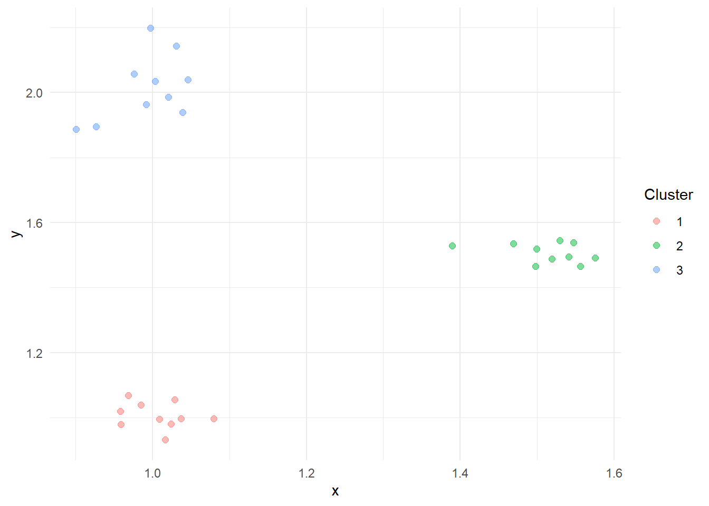
Dann können wir die Distanzen bezüglich der dem Single-Linkage Verfahren wie folgt grafisch darstellen.
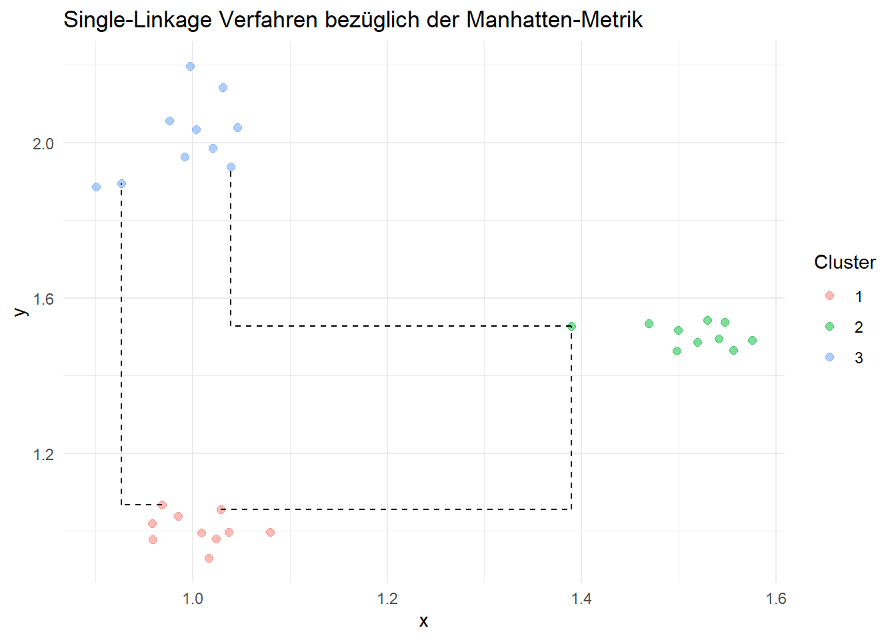
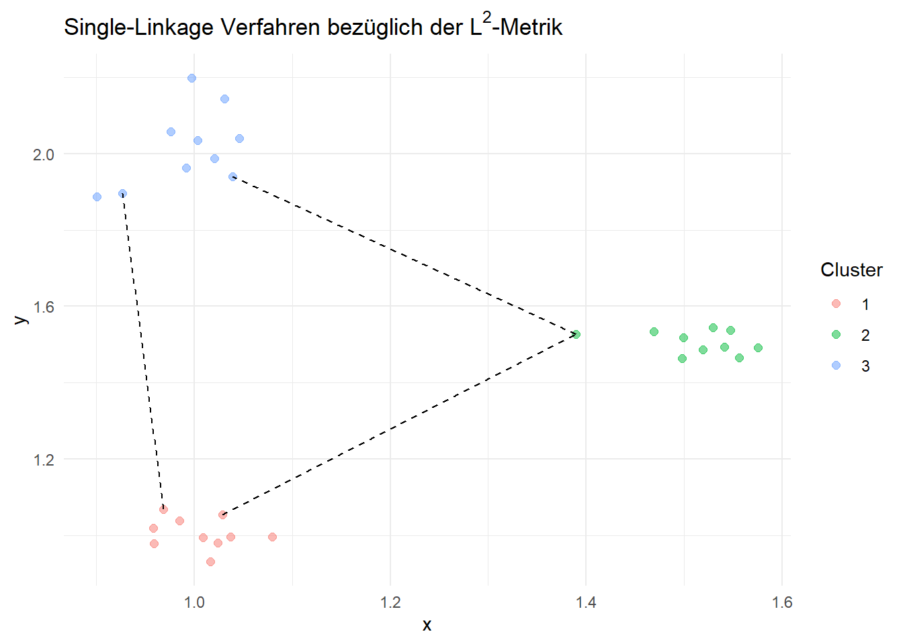
Die Clusterdistanzen bezüglich der dem Complete-Linkage Verfahren lassen sich ebenso grafisch darstellen:
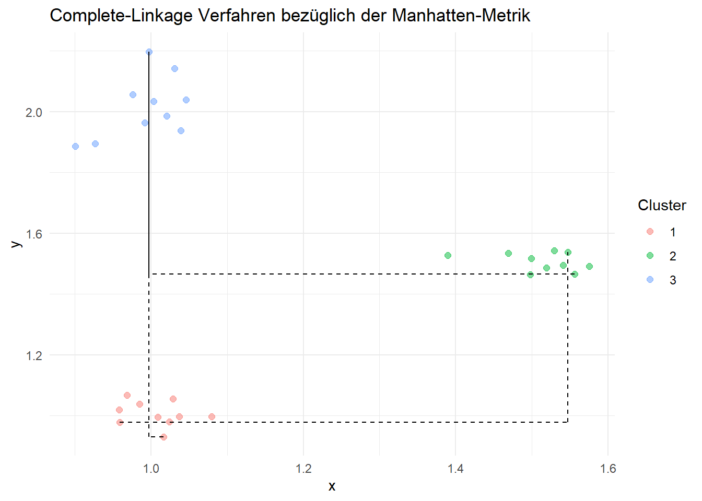
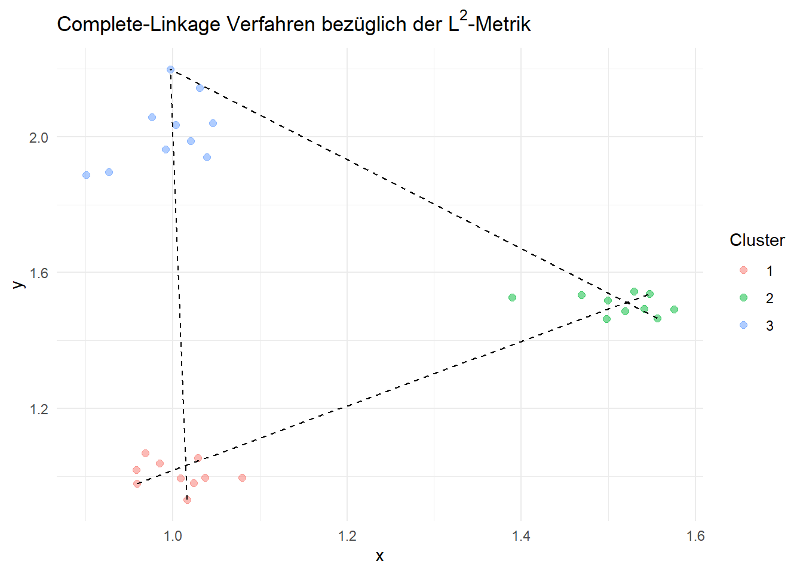
7.3.1.2 Agglomorative- und Divisive Verfahren
Wir können nun mithilfe der zuvor definierten Distanzmaße zwischen Punkten und Clustern das agglomorative und divisive Clusterverfahren genauer betrachten.
Den Ablauf des agglomorativen Verfahrens können wir in den folgenden Schritten zusammenfassen:
Weise jeden Datenpunkt einem eigenen Cluster zu.
Wiederhole die folgenden Schritte, bis eine gewünschte Anzahl an Cluster gebildet wurde:
- Berechne die Distanzen zwischen allen Paaren von Clustern gemäß dem Verknüpfungskriterium (Single-, Complete-, Average-Linkage).
- Finde das Paar \((C_i,C_j)\) mit der minimalen Distanz.
- Führe \(C_i\) und \(C_j\) zu einem neuen Cluster \(C_{ij} = C_i \cup C_j\) zusammen.
- Berechne die Distanzen zwischen allen Paaren von Clustern gemäß dem Verknüpfungskriterium (Single-, Complete-, Average-Linkage).
Der Ablauf des divisiven Verfahrens können wir ebenso wie folgt zusammenfassen:
Beginne mit einem einzelnen Cluster bestehend aus allen Datenpunkten.
Zerlege jedes Cluster in zwei Untercluster gemäß den Spaltungsskriterien (Single-, Complete-, Average-Linkage).
Wiederhole Schritt 2 bis eine vorher festgelegte Zahl an Cluster erreicht wurde.
7.3.1.3 Dendrogramme
Unabhängig von der Dimensionalität des Datensatzes ist es wünschenswert die Clusterbildung zu visualisieren, damit wir ein Gefühl dafür bekommen können, wie
- weit die verschiedenen Cluster voneinander entfernt sind.
- sich die Distanzen der Cluster durch weiteres Aufteilen bzw. Zusammenfügen verändert.
Hierfür betrachten wir die sogenannten Dendrogramme, welche anhand einer Baumstruktur die Anzahl der Cluster und deren Clusterdistanz visualisieren. Dieses wird als Binärbaum dargestellt, wobei die die Blattknoten den einzelnen Datenpunkten entsprechen (jeder Datenpunkt ist ein Cluster).
In den höhreren Ebenen des Baums liegen die zusammengeführten Cluster der vorherigen Ebenen. Ob der Baum allerdings hierbei von unten nach oben oder verkehrt konstruiert wird hängt davon ab, ob es sich um ein agglomoratives oder divisives Verfahren handelt. Auf der \(y\)-Achse bilden wir die Distanz zwischen Cluster ab und auf Baisis dieser Entscheiden wie viele Cluster wir bilden wollen.
Eine horizontale Linie im Digaramm beschreibt also, wie groß der Abstand zwischen den zwei darauffolgenden Clustern ist. Die vertikale Position der Knoten zeigt außerdem, in welcher Reihenfolge die Knoten zu einem Cluster aggregiert wurden. Durch das Hinzufügen einer horizontalen Geraden an einem beliebigen Punkt, können wir anhand der Anzahl der (potenziellen) Schnittpunkte der Geraden mit dem Dendrogramm die Anzahl der Cluster in der entsprechenden Schicht bestimmen.
Die folgende Grafik zeigt das Dendrogramm erstellt auf Basis des Datensatzes in Example 7.1:
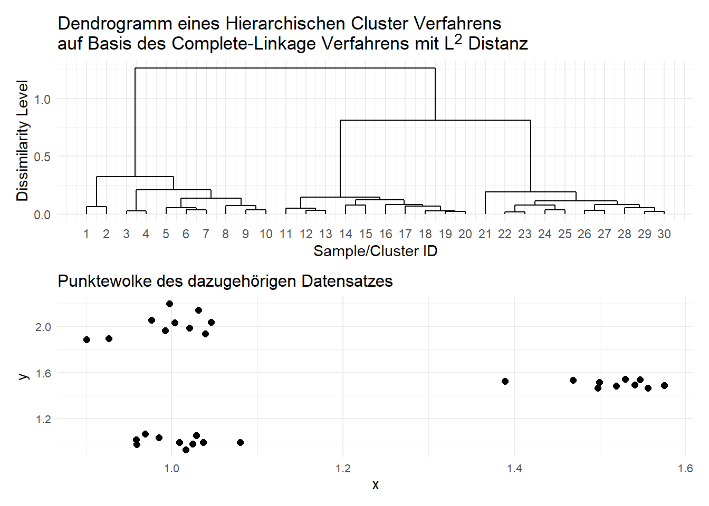
Wie in der Grafik zu erkennen ist, ist der Abstand zwischen den beiden Clustern, welche beim Trennen des gesamten Datensatzes entstehen die Distanz bei ca. 1.5. Durch das Hinzufügen einer horizontalen Geraden im Punkt \(y=0.25\) erhalten wir dann, dass zu diesem Heterogenitätsniveau bzw. Dissimilarity Level \(4\) Cluster gebildet wurden:
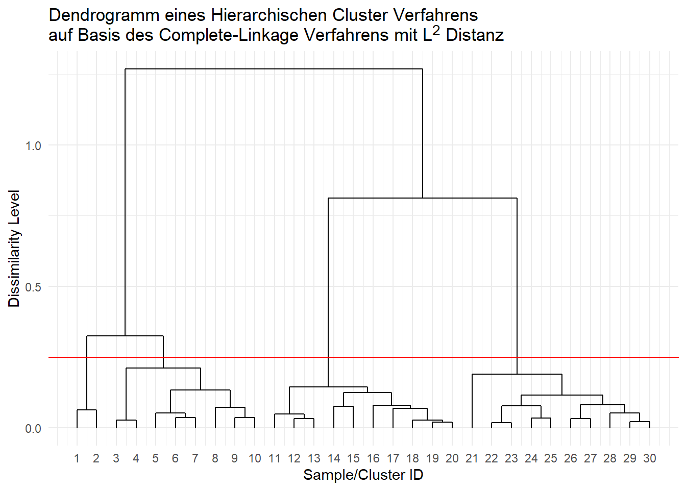
7.3.2 Bestimmung der optimalen Clusteranzahl
Bei hierarchischen Algorithmen werden im Dendrogram für verschiedene Clusteranazahlen die Dissimilarity Werte abgebildet, allerdings ist sowohl in diesem Kontext als auch beim \(k\)-Means algorithmus nicht klar, wie der Wert \(k\) gewählt werden soll. Natürlich könnten wir jeden Punkt sein eigenes Cluster zuweisen, allerdings ist es dann nicht sinnvoll die Cluster anschließend zu untersuchen. Genausowenig sollten wir die Anzahl der Cluster auf \(1\) setzen, da schließlich das Ziel ist möglichst homogene Cluster zu finden. Eine Antwort auf die Frage, wie viele Cluster man wählen sollte liefert der Scree-Plot. Dieser zeigt auf der \(x\)-Achse die Anzahl der Cluster und auf der \(y\)-Achse das Dissimilarity Level. Diese Kurve ist monoton fallend in der Anzahl der Cluster, da mit jedem weiteren Cluster die Homogenität innerhalb der Cluster steigt.
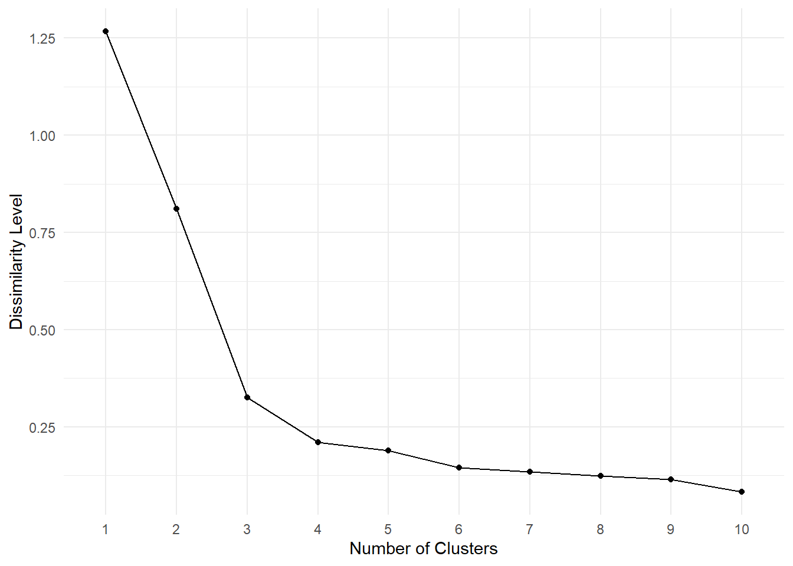
Eine Entscheidungsregel für die Anzahl der Cluster lautet dann:
Wähle jene Anzahl an Cluster, für welche der Winkel eingeschlossen zwischen den beiden benachbarten Punkten am geringsten ist.
Heuristisch wird diese Regel auch oft Ellenbogenkriterium genannt, da man jenen Punkt auf der Kurve auswählt, welcher dem Knick eines Ellenbogens am ähnlichsten ist.
7.4 Ähnlichkeitsmaße und Clustering in R
In diesem Abschnitt wollen wir verschiedene Ähnlichkeits- bzw. Distanzmaße, Clusteralgorithmen und Clusteranalysen in R betrachten. Hierfür verwenden wir vor allem die folgenden Pakete:1
library(tidyverse)
library(tidyclust)
library(ggdendro)
library(cluster)Wir betrachten in diesem Abschnitt wieder den palmerpenguins::penguins Datensatz.
7.4.1 Ähnlichkeitsmaße
Die Funktion cluster::daisy() berechnet für einen übergebenen Datensatz verschiedene Distanzmatrizen. Als Argumente übergibt man hier neben dem Datensatz auch das Argument metric, welches die Metrik, bzw. Methode spezifiziert bezüglich welcher die Ähnlichkeitsmaße berechnet werden sollen. Zulässige Metriken sind hierbei "euclidean", "manhattan" und "gower". Lediglich die Gower Metrik erlaubt es uns mit dieser Funktion auch gemischte Datensätze zu untersuchen.
Beispiel 7.2 Betrachte folgenden Teildatensatz des palmerpenguins::penguins Datensatzes, bestehend aus dem ersten, 50. und 250. Pinguin (ohne die Variable year):
data_pen_bottom <- palmerpenguins::penguins[c(1,50,250),] %>%
select(-year)Dann können wir für die metrischen Feature mithilfe der daisy() Funktion sowohl die \(L^2\) als auch die Manhattan Metrik berechnen:
data_pen_bottom %>%
select_if(is.numeric) %>%
daisy(metric = "euclidean")Dissimilarities :
1 2
2 400.1456
3 1125.7814 725.7070
Metric : euclidean
Number of objects : 3Wir können dieses Ergebnis auch selbst verifizieren:
\[\begin{align*} d(x_1,x_2) &= \sqrt{(39.1-42.3)^2+(18.7-21.2)^2+(181-191)^2+(3750-4150)^2} = 400.1456\\ d(x_1,x_3) &= \sqrt{(39.1-46.9)^2+(18.7-14.6)^2+(181-222)^2+(3750-4875)^2} = 1125.781\\ d(x_2,x_3) &= \sqrt{(42.3-46.9)^2+(21.2-14.6)^2+(191-222)^2+(4150-4875)^2} = 725.7070 \end{align*}\]
Die Manhattan-Metrik zwischen den Datenpunkten können wir einfach berechnen, indem wir das Argument "euclidean" durch "manhattan" ersetzen.
Beachte: Wir haben hier die Feature noch nicht normalisiert!
Da der Datensatz aber nicht nur aus metrischen Feature besteht, wollen wir die Gower-Distanz auf die Punkte anwenden:
data_pen_bottom %>%
daisy(metric = "gower")Dissimilarities :
1 2
2 0.3412146
3 0.9458874 0.8557551
Metric : mixed ; Types = N, N, I, I, I, I, N
Number of objects : 3Neben der Distanzmatrix erhalten wir noch Informationen über die verschiedenen Datentypen. N steht in diesem Kontext für Nominal und I für Interval. Auf Basis dieses Ergebnisses können wir feststellen, dass sich der erste und zweite Pinguin am ähnlichsten sind und der erste und dritte Pinguin am unähnlichsten.
Um eine Korrelationsmatrix für metrischen Feature zu erzeugen, können wir die corrr::correlate Funktion verwenden. Dieser Funktion müssen wir das Argument method = "pearson" übergeben, um eine Korrelationsmatrix bezüglich dem Pearson-Korrelationskoeffizienten zu erhalten.
Beispiel 7.3 Damit wir die Korrelationsmatrix für die metrischen Feature des Pinguin Datensatzes berechnen können, müssen wir diese zuerst wieder extrahieren und dann die correlate() Funktion darauf anwenden:
data_pen_bottom %>%
select_if(is.numeric) %>%
corrr::correlate(method = "pearson")# A tibble: 4 × 5
term bill_length_mm bill_depth_mm flipper_length_mm body_mass_g
<chr> <dbl> <dbl> <dbl> <dbl>
1 bill_length_mm NA -0.693 0.983 0.998
2 bill_depth_mm -0.693 NA -0.814 -0.737
3 flipper_length_mm 0.983 -0.814 NA 0.993
4 body_mass_g 0.998 -0.737 0.993 NA Anhand dieser Korrelationsmatrix kann man ablesen, dass die Variablen body_mass_g und bill_length_mm sehr stark positiv korrelieren und die Variablen flipper_length_mm sowie bill_depth_mm sehr stark negativ korrelieren.
7.4.2 Clustering
In diesem Abschnitt betrachten wir hierarchische Verfahren.
7.4.2.1 Hierarchische Verfahren
Zum Durchführen einer hierarchischen Clustermethode können wir die stats::hclust() Funktion verwenden. Die hclust() Funktion verwendet hierbei allerdings lediglich ein agglomoratives Verfahren. Für divisive Verfahren können wir die dclust::dclust() Funktion verwenden.2. Das allgemeine Vorgehen hierbei ist wie folgt:
- Berechne für die zu untersuchenden Daten eine Distanz- oder Ähnlichkeitsmatrix, z.B. mithilfe der
daisy()Funktion. - Verwende diese Distanz- oder Ähnlichkeitsmatrix zum berechnen der Cluster.
Da im Pinguin Datensatz sowohl metrische als auch nominale Feature vorhanden sind, verwenden wir auch hier wieder die Gower Distanz. In Kombination mit der hclust Funktion können wir dann ein hclust Objekt erstellen.
hclust_pen <- data_penguin %>%
daisy(metric = "gower") %>%
hclust(method = "complete")Die Variable hclust_pen enthält also ein hclust Objekt, welches unter anderem folgende Attribute besitzt:
| Feld | Beschreibung |
|---|---|
merge |
Eine (n-1) × 2 Matrix. Zeile i von merge beschreibt das Zusammenführen von Clustern im Schritt i der Clusteranalyse. Wenn ein Eintrag j negativ ist, bedeutet das, dass die Beobachtung -j in diesem Schritt zusammengeführt wurde. Ist j positiv, wurde ein bereits zuvor gebildeter Cluster (aus Schritt j) zusammengeführt. Negative Einträge stehen also für das Zusammenführen einzelner Beobachtungen, positive für das Zusammenführen bestehender Cluster. |
height |
Eine Menge von n-1 reellen Werten. Gibt die Höhe des Clusterings an, also den Wert des Kriteriums, das für die Zusammenführung verwendet wurde. |
order |
Ein Vektor, der eine Permutation der ursprünglichen Beobachtungen angibt, geeignet zur Darstellung des Dendrogramms, sodass sich die Zweige nicht kreuzen. |
labels |
Beschriftungen für jedes der zu clusternden Objekte. |
call |
Der Funktionsaufruf, der das Ergebnis erzeugt hat. |
method |
Die verwendete Clustermethode. |
dist.method |
Das verwendete Distanzmaß zur Erstellung von d (nur vorhanden, wenn das Distanzobjekt ein "method"-Attribut besitzt). |
Das Attribut merge enthält also Informationen darüber wie die verschiedenen Cluster konstruiert werden. Mithilfe der head() Funktion können wir dann zum Beispiel die ersten 11 Schritte betrachten:
hclust_pen %>%
pluck("merge") %>%
head(11) [,1] [,2]
[1,] -1 -4
[2,] -233 -272
[3,] -306 -316
[4,] -199 -213
[5,] -191 -209
[6,] -51 -57
[7,] -223 -227
[8,] -212 -222
[9,] -64 -66
[10,] -220 -228
[11,] -195 4In den ersten zehn Schritten wurden immer einzelne Observationen zusammengefügt. Erst in Schritt 11 wurde die 195. Observation dem Cluster aus Zeile 4 hinzugefügt, welches nach dem hinzufügen also aus den Observationen \(\{199,213,195\}\) besteht.
Nach der Berechnung der Cluster können wir dann einen Scree-Plot erstellen um eine optimale Anzahl der Cluster zu bestimmen. Hierfür verwenden wir folgendes Code-Snippets:
complete_clust <- hclust_pen %>%
pluck("height")%>%
as_tibble() %>%
mutate(num_clust = (nrow(data_penguin)-1):1) %>%
rename(height=value)Zuerst extrahieren wir aus dem Objekt hclust_pen das Attribut height. Dieses enthält einen monoton fallenden Vektor mit Werten welche sich durch das verwendete Linkage Verfahren ergeben haben. So ist der erste Wert jene Distanz, welche sich beim Zusammenführen der ersten beiden Einzelpunkte zu einem Cluster ergeben. Da der Rückgabewert ein Vektor ist, wandeln wir diesen mithilfe der as_tibble() Funktion in ein Tibble um, damit wir im darauffolgenden Schritt die Anzahl der Cluster hinzufügen können. Mithilfe der rename() Funktion wandeln wir zum Schluss den Name der Spalte value in height abzuändern.
Nachdem wir die Daten aufbereitet haben, wollen wir diese nun als Scree-Plot darstellen. Zuerst filtern wieder die zuvor erstellten Daten so, dass nur Ergebnisse für die Einteilung in \(1\),…,\(9\) Cluster angezeigt werden. Durch das Filtern erreichen wir, dass der Plot letztendlich übersichtlicher ist. Wir können dann den Scree-Plot einfach als Kombination einer Punktewolke und eines Line-Charts darstellen:
complete_clust %>%
filter(num_clust <= 9) %>%
ggplot(aes(x=num_clust, y=height)) +
geom_point() +
geom_line()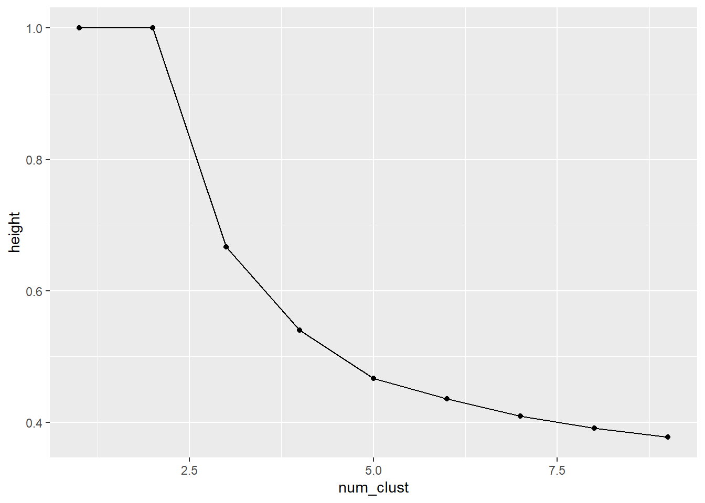
Damit der Plot leichter zu lesen ist, passen wir im folgenden Code-Snippet noch die Achsen an:
complete_clust %>%
filter(num_clust <= 9) %>%
ggplot(aes(x=num_clust, y=height)) +
geom_point() +
geom_line()+
scale_x_discrete(
labels = seq.int(1,9),
limits = factor(seq.int(1,9))
)+
labs(
x = "Number of Clusters",
y = "Dissimilarity Level"
)+
theme_minimal()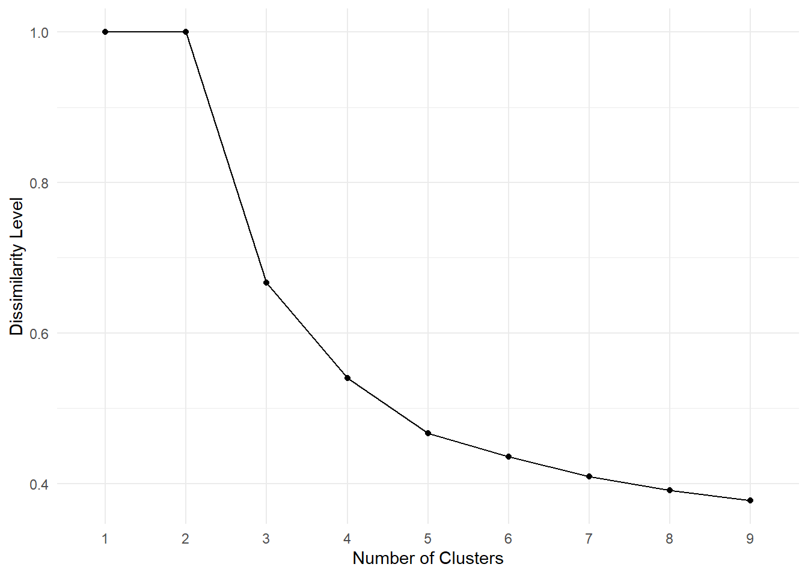
Anhand der gegebenen Grafik lässt sich nicht ganz eindeutig sagen, welche Anzahl der Cluster optimal ist. Man könnte aber argumentieren, dass der Winkel um Punkt 3 oder 5 am kleinsten aussieht, so dass 3 oder 5 die optimale Anzahl an Cluster ist.
Angenommen wir entscheiden uns den Datensatz in 5 Cluster aufzuteilen, dann können wir die cutree() Funktion verwenden, um Cluster-Label zum Datensatz hinzuzufügen:
clustered_pen <- data_penguin %>%
cbind(hclust_pen %>%
cutree(k=5) %>%
factor()
) %>%
rename(c("cluster_label" = 9))Der nächste Schritt ist nun die einzelnen Cluster zu analysieren. So könnte man zum Beispiel für jedes Cluster das durchschnittliche Gewicht der Pinguine berechnen und die Größe des Clusters angeben:
clustered_pen %>%
na.omit() %>%
group_by(cluster_label) %>%
summarise(
clust_size = n(),
avg_weight = mean(body_mass_g)
)# A tibble: 5 × 3
cluster_label clust_size avg_weight
<fct> <int> <dbl>
1 1 23 4035.
2 2 73 3369.
3 3 50 4048.
4 4 119 5092.
5 5 68 3733.Im dritten Cluster befinden sich also nicht nur die meisten Pinguine sondern im Schnitt auch die schwersten!
Ein Dendrogramm können wir mithilfe von verschiedenen Funktionen erzeugen.
Die R interne base::plot() Funktion kann direkt auf das Objekt hclust_pen angewendet werden:
hclust_pen %>% plot()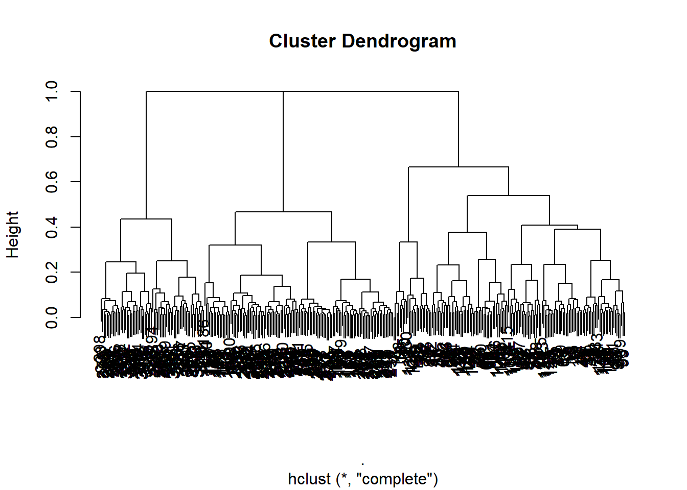
Der Unterschied zu den in Section 7.3.1.3 erzeugten Dendrogrammen liegt in der Darstellung der Blattknoten.
Diese unterscheiden sich bei dem durch die base::plot() erzeugte Funktion vor allem durch die vertikale Position. Die vertikale Position gibt Auskunft darüber, in welcher Reihenfolge die Cluster gebildet wurden. Dadurch, dass das Dendrogramm in diesem Fall aber nicht wirklich übersichtlich ist, wollen wir im folgenden ein Beispiel betrachten.
Beispiel 7.4 Betrachte den synthetischen, normalisierten Datensatz erzeugt durch das Code-Snippet:
set.seed(123)
data_exm <- tibble(
x = c(
rnorm(5,1,0.1),
rnorm(5,0.5,0.1)
),
y = c(
rnorm(5,0.5,0.1),
rnorm(5,1.0,0.1)
)
) Wir können diesen als Punktewolke darstellen:
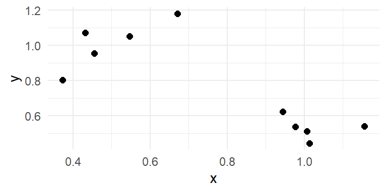
Durch das Anwenden der hclust() Funktion erhalten wir dann wieder ein Objekt, welches wir direkt mithile der plot() Funktion darstellen können:
data_exm %>%
daisy(metric = "euclidean") %>%
hclust(method = "single") %>%
plot()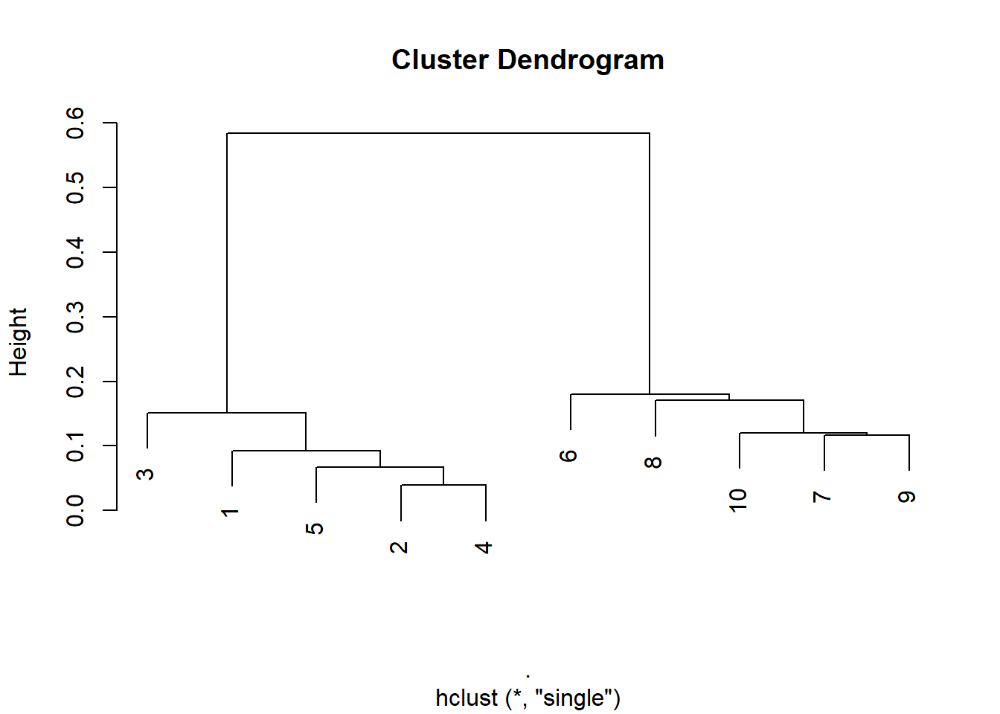
Anhand dieses Plots können wir nun die Reihenfolge der Clusterbildung ablesen:
Da die Punkte 2 und 4 am tiefsten abgebildet sind, wurden diese Punkte zuerst zu einem Cluster \(C_{2,4}\) zusammengeführt. Darauffolgend wird der Punkt 5 dem Cluster \(C_{2,4,5}\) hinzugefügt. Im letzten Schritt werden dann die beiden Cluster mit den Punkten \(\{3,1,5,2,4\}\) bzw. \(\{6,8,19,7,9\}\) zusammengeführt, da diese Cluster am weitesten entfernt voneinander liegen.
Wir können durch die merge Tabelle diese Beobachtungen auch direkt verifizieren:
data_exm %>%
daisy(metric = "euclidean") %>%
hclust(method = "single") %>%
pluck("merge") [,1] [,2]
[1,] -2 -4
[2,] -5 1
[3,] -1 2
[4,] -7 -9
[5,] -10 4
[6,] -3 3
[7,] -8 5
[8,] -6 7
[9,] 6 87.5 Übungsaufgaben
Aufgabe 7.1 Gegeben sei folgender Ausschnitt aus dem penguins Datensatz:
# A tibble: 5 × 6
species island bill_length_mm bill_depth_mm flipper_length_mm body_mass_g
<fct> <fct> <dbl> <dbl> <int> <int>
1 Adelie Torgersen 42 20.2 190 4250
2 Adelie Dream 39.8 19.1 184 4650
3 Adelie Biscoe 35 17.9 192 3725
4 Adelie Dream 40.2 17.1 193 3400
5 Gentoo Biscoe 50.5 15.9 225 5400- Berechne für den ersten und vierten Pinguins die Euklidische- und Manhattan-Distanz auf Basis der metrischen Features.
- Berechne für den zweiten und fünften Pinguin die Gower-Distanz, falls
- alle Variablen gleich gewichtet werden.
- die nominalen Feature doppelt gewichtet werden.
Aufgabe 7.2 Beim Durchführen eines Hierarchischen Clusteringalgorithmus ergibt sich folgender Ausschnitt aus dem merge Attribut bestehend aus den ersten 5 Schritten:
[,1] [,2]
[1,] -1 -4
[2,] -2 1
[3,] -3 2
[4,] -5 3
[5,] -6 4- Beschreibe die ersten fünf Schritte. Gehe hierbei auf die Clusterbildung ein und gebe die resultierenden Cluster an.
- Um welches der beiden Verfahren (Single-Linkage, Complete-Linkage) handelt es sich vermutlich hier?
Aufgabe 7.3 Es sei nun folgende Distanzmatrix gegeben:
Dissimilarities :
1 2 3 4
2 1.595799
3 3.895069 3.349281
4 3.478931 3.632839 3.368725
5 2.537908 3.097825 3.325886 2.704879
Metric : euclidean
Number of objects : 5Führe für diese Matrix die ersten zwei Schritte des Complete-Linkage Verfahrens durch. Gebe hierbei die kleinsten Distanzen zwischen den Clustern und die Distanzmatrizen nach jedem Schritt an. Gebe außerdem nach dem zweiten Schritt die finalen Cluster an.
Wir wollen für die R Übungen ein letztes Mal den modeldata::hotel_rates Datensatz untersuchen.
Verwende das folgende Code-Snippet für das Preprocessing und bearbeite die darauffolgenden Aufgaben mithilfe des data_hotel_filtered Datensatzes.
data_hotel <- modeldata::hotel_rates
cntry_list<-c("and", "aut", "aze",
"che", "chl", "cze",
"esp", "geo", "hun", "ita",
"lux", "mar", "mwi", "nga", "prt",
"rus", "swe", "tur", "twn",
"usa")
data_hotel_filtered <- data_hotel %>%
filter(country %in% cntry_list) %>%
mutate(
arrival_month = factor(month(arrival_date)),
num_guests = adults+children,
is_repeated_guest = factor(is_repeated_guest),
near_christmas = factor(near_christmas),
near_new_years = factor(near_new_years)
) %>%
select(-c(adults,children,agent,arrival_date,arrival_date_num))Aufgabe 7.4
Schreibe eine Funktion
scale2, welche als Input eine Variablexerhält und diese entsprechend der Formel \[\begin{equation*} \tilde{x} = \frac{x-\hat{\mu}_x}{\hat{\text{sd}}_x} \end{equation*}\] transformiert. Die Variable \(\tilde{x}\) soll anschließend der Rückagebwert der Funktionscale2sein.Verwende die in Teilaufgabe 1. erstellte Funktion
scale2um alle Feature des Typ<dbl>zu normieren. Speichere hierbei die normalisierten Daten in einem neuen Datensatzdata_hotel_filtered_scaled.
Aufgabe 7.5 Verwende den in Aufgabe 7.4 erstellten Datensatz data_hotel_filtered_scaled um das Complete-Linkage Verfahren auf Basis einer Gower-Distanzmatrix anzuwenden und speichere das hclust Objekt in einer neuen Variable data_clust.
Aufgabe 7.6 Wir wollen nun die Ergebnisse des hierarchischen Clusterns untersuchen. Erstelle hierfür wie einen Scree-Plot und identifiziere anhand der “Ellenbogen”-Methode die optimale Anzahl an Clusterpunkten.
Aufgabe 7.7 Verwende die in der vorherigen Aufgabe bestimmte optimale Clusteranzahl um einen neuen Datensatz data_hotel_clustered zu erstellen, welcher zum einen den Datensatz data_hotel_filtered enthält und zum anderen eine neue Spalte cluster_label, welche die entsprechenden Cluster Label für jeden Datenpunkt enthält.
Aufgabe 7.8
Finde heraus, wie viele Datenpunkte in den jeweiligen Clustern vertreten sind und was der Durchschnittliche Wert der Variable
avg_price_per_roomin jedem Cluster ist.Erstelle einen Plot, welcher für jedes Cluster einen Boxplot für die Variable
lead_timeenthält. Gibt es Auffälligkeiten bezïuglich der Quantile?
7.6 Lösungen
Solution 7.1 (Aufgabe 7.1).
- Die euklidische Distanz ist gegeben durch \[\begin{equation*} \sqrt{(42-40.2)^2+(20.2-17.1)^2+(190-193)^2+(4250-3400)^2} = 850.0129 \end{equation*}\]
- Die Manhattan Distanz inst gegeben durch \[\begin{equation*} |42-40.2|+ |20.2-17.1|+ |190-193|+ |4250-3400| = 857.9 \end{equation*}\]
- Falls alle Variablen gleich gewichtet sind, dann gilt \[\begin{align*} d_G(x_m,x_l) &= \frac{\sum_{j=1}^J \delta(x_{m,j},x_{l,j})d(x_{m,j},x_{l,j})}{\sum_{j=1}^J\delta(x_{m,j},x_{l,j})}\\ &=\frac{\sum_{j=1}^J c\cdot d(x_{m,j},x_{l,j})}{\sum_{j=1}^Jc}\\ &=\frac{c\cdot \sum_{j=1}^J d(x_{m,j},x_{l,j})}{J\cdot c}\\ &=\frac{\sum_{j=1}^J d(x_{m,j},x_{l,j})}{J} \end{align*}\] Es ergibt sich dann: \[\begin{align*} d(x_{2,1},x_{5,1}) &= 1\\ d(x_{2,2},x_{5,2}) &= 1\\ d(x_{2,3},x_{5,3}) &= \frac{|39.8-50.5|}{50.5-35}=0.69\\ d(x_{2,4},x_{5,4}) &= \frac{|19.1-15.9|}{20.2-15.9}=0.74\\ d(x_{2,5},x_{5,5}) &=\frac{|184-225|}{225-184} = 1\\ d(x_{2,6},x_{5,6}) &=\frac{|4650-5400|}{5400-3400} = 0.375 \end{align*}\] Das Aufsummiern und Teilen durch \(6\) ergibt dann \[\begin{equation*} d_G(x_2,x_4) = \frac{1+1+0.69+0.74+1+0.375}{6} = 0.8 \end{equation*}\]
- Falls die nominalen Variablen doppelt gewichtet werden, dann gilt: \[\begin{equation} d_G(x_m,x_l) = \frac{\sum_{j=1}^J w_j \cdot d(x_{m,j},x_{l,j})}{\sum_{j=1}^J w_j} \end{equation}\] Dabei setzen wir: \[\begin{equation} w_1 = w_2 = 2, \quad w_3 = w_4 = w_5 = w_6 = 1 \end{equation}\] Es ergibt sich dann: \[\begin{align} d(x_{2,1},x_{5,1}) &= 1 \notag \\ d(x_{2,2},x_{5,2}) &= 1 \notag \\ d(x_{2,3},x_{5,3}) &= \frac{|39.8 - 50.5|}{50.5 - 35} = \frac{10.7}{15.5} \approx 0.69 \notag \\ d(x_{2,4},x_{5,4}) &= \frac{|19.1 - 15.9|}{20.2 - 15.9} = \frac{3.2}{4.3} \approx 0.744 \notag \\ d(x_{2,5},x_{5,5}) &= \frac{|184 - 225|}{225 - 184} = \frac{41}{41} = 1 \notag \\ d(x_{2,6},x_{5,6}) &= \frac{|4650 - 5400|}{5400 - 3400} = \frac{750}{2000} = 0.375 \notag \end{align}\] Die gewichtete Summe der Distanzen im Zähler: \[\begin{equation} 2 \cdot 1 + 2 \cdot 1 + 1 \cdot 0.69 + 1 \cdot 0.744 + 1 \cdot 1 + 1 \cdot 0.375 = 6.809 \end{equation}\] Die Summe der Gewichte im Nenner: \[\begin{equation} 2 + 2 + 1 + 1 + 1 + 1 = 8 \end{equation}\] Insgesamt ergibt sich dann \[\begin{equation} d_G(x_2, x_5) = \frac{6.809}{8} \approx 0.851 \end{equation}\]
Solution 7.2 (Aufgabe 7.2).
- Merge
-1und-4\(\implies\) Cluster \(C1 = \{1, 4\}\)
- Merge
-2und1\(\implies\) Cluster \(C2 = \{2, 1, 4\}\)
- Merge
-3und2\(\implies\) Cluster \(C3 = \{3, 2, 1, 4\}\)
- Merge
-5und3\(\implies\) Cluster \(C4 = \{5, 3, 2, 1, 4\}\)
- Merge
-6und4\(\implies\) Cluster \(C5 = \{6, 5, 3, 2, 1, 4\}\)
- Merge
- Es handelt sich hierbei vermutlich um das Single-Linkage Verfahren, da dieses dazu tendiert Ketten zu bilden.
Solution 7.3 (Aufgabe 7.3). Zuerst müssen wir das Paar mit minimalem Abstand identifizieren:
- Der kleinste Wert ist durch \(1.5958\) zwischen Objekt 1 und 2 gegeben.
- Wir können diese also zu einem Cluster \(C_{1,2} = \{1,2\}\) zusammenfassen.
Durch das Anwenden der Complete-Linkage Methode ergibt sich dann folgende Distanzmatrix:
| 3 | 4 | 5 | |
|---|---|---|---|
| \(C_{1,2}\) | \(\max\{3.9, 3.35\} = 3.9\) | \(\max\{3.48, 3.63\} = 3.63\) | \(\max\{2.54, 3.1\} = 3.1\) |
| 3 | 3.37 | 3.33 | |
| 4 | 2.7 |
Wir können in dieser neuen Distanzmatrix nun wieder nach der kleinsten Distanz zwischen den Clustern suchen und diese zum nächsten Cluster hinzufügen:
- Der kleinste Wert ist durch \(2.7049\) zwischen Objekt 4 und 5 gegeben.
- Es ergibt sich dadurch das Cluster \(C_{4,5} = \{4,5\}\)
Wir erhalten daraufhin die Distanzmatrix
| 3 | \(C_\{4,5\}\) | |
|---|---|---|
| \(C_{1,2}\) | \(3.90\) | \(\max\{3.48, 3.63, 2.54, 3.1\} = 3.63\) |
| 3 | — | \(\max\{3.37, 3.33\} = 3.37\) |
Die finalen Cluster nach zwei Schritten sind dann durch
\[\begin{align*} C_{1,2} &= \{1,2\}\\ C_{3} &= \{3\}\\ C_{4,5} &= \{4,5\} \end{align*}\]
gegeben.
Solution 7.4 (Aufgabe 7.4).
-
scale2 <- function(x){ x_scaled <- (x-mean(x)/sd(x)) return(x_scaled) } -
data_hotel_filtered_scaled <- data_hotel_filtered %>% mutate_if(is_double , scale2 )
Solution 7.5 (Aufgabe 7.5).
data_clust <- data_hotel_filtered_scaled %>%
daisy(metric="gower") %>%
hclust(method="complete")Solution 7.6 (Aufgabe 7.6).
complete_clust <- data_clust %>%
pluck("height") %>%
as_tibble() %>%
mutate(num_clust =(nrow(data_hotel_filtered)-1):1) %>%
rename(height=value)
complete_clust %>%
filter(num_clust<=9) %>%
ggplot(aes(x=num_clust,y=height))+
geom_point()+
geom_line()+
scale_x_discrete(
labels = seq.int(1,9),
limits = factor(seq.int(1,9))
)+
labs(x ="Number of Clusters",y ="Dissimilarity Level")+
theme_minimal()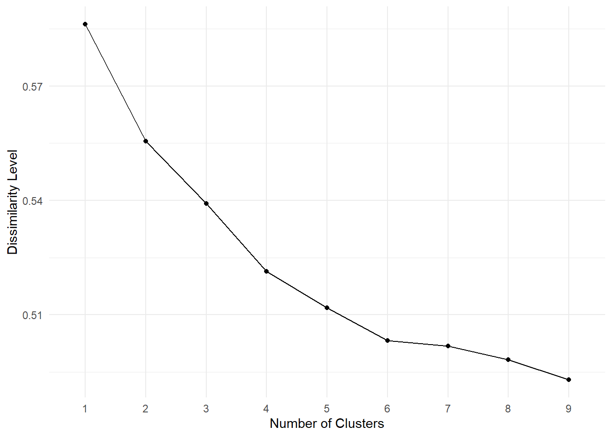
Mithilfe der Ellenbogen Methode können wir \(k=6\) als optimale Clusteranzahl identifizieren, da dieser Punkt den kleinsten Winkel im Vergleich zu den anderen Punkten einschließt.
Solution 7.7 (Aufgabe 7.7). Aus der vorherigen Aufgabe ergibt sich, dass die optimale Anzahl an Cluster durch \(k=6\) gegeben ist.
data_hotel_clustered <- data_clust %>%
cutree(k=6) %>%
factor() %>%
cbind(data_hotel_filtered) %>%
rename("cluster_label" = 1)Solution 7.8 (Aufgabe 7.8).
Mithilfe der
group_by()undsummary()Funktionen können wir direkt berechnen, wie viele Datenpunkte in den jeweiligen Clustern sind und wie hoch die durchschnittlichen Übernachtungskosten in den jeweiligen Clustern sind:data_hotel_clustered %>% group_by(cluster_label) %>% summarise(n=n(), mean_price = mean(avg_price_per_room) )# A tibble: 6 × 3 cluster_label n mean_price <fct> <int> <dbl> 1 1 3785 134. 2 2 1880 140. 3 3 440 59.8 4 4 53 102. 5 5 1297 57.4 6 6 83 169.-
data_hotel_clustered %>% ggplot(aes(x=cluster_label,y=lead_time))+ geom_boxplot()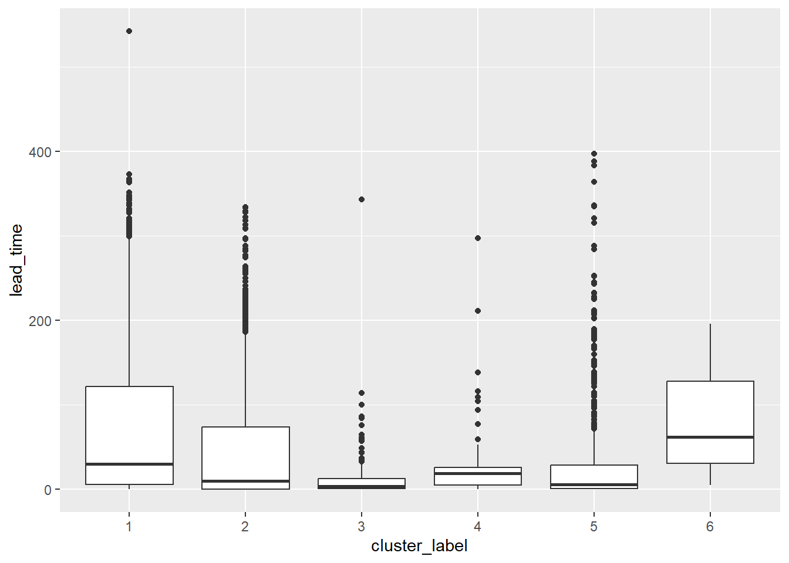
Die Boxplots zeigen, dass die verschiedenen Cluster teilweise sehr verschiedene Quartile enthalten. Wenig überraschend ist, dass ziemlich alle untere Quartile um die \(0\) ligen, da es viele Gäste geben wird welche nur kurzfristig ein Zimmer buchen. Insbersondere im 6. Cluster scheint es allerdings eine Tendenz zu geben, die Hotezimmer bereits im Voraus zu buchen, was dieses Cluster von den anderen unterscheidet.